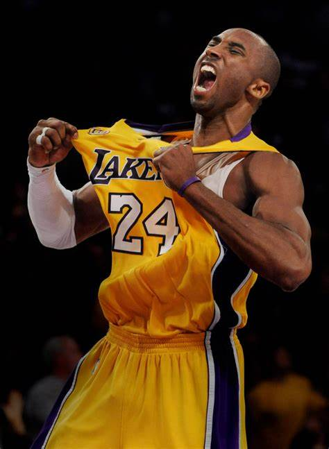

|
Kobe Bryant (1978-2020) fue un legendario jugador de baloncesto estadounidense, considerado uno de los mejores en la historia de la NBA. Jugó toda su carrera de 20 años con Los Angeles Lakers, donde ganó 5 campeonatos de la NBA y fue cinco veces All-Star MVP. Destacó por su gran capacidad anotadora, competitividad y ética de trabajo, y dejó un legado imborrable dentro y fuera de la cancha. Además, fue un exitoso empresario y ganador de un Óscar por un cortometraje animado.
menu principal
|

 COBE BRYANT
COBE BRYANT